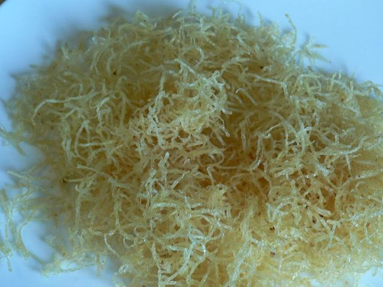

Pommes paille
Ingrédients pour 4 personnes
- 1 kg de pommes de terre
- Huile de friture
- Sel fin
Préparation

- Épluchez les pommes de terre.
- Râpez-les
- Mettez-les dans une passoire, versez dessus de l'eau chaude séchez-les dans un linge.
- Plongez-y les pommes paille davs une friture à 180 °C.
- Remuez pour éviter qu'elles ne s'agglomèrent entre elles.
- Laissez-les cuire jusqu'à ce qu'elles soient dorées, environ 4 min
- Salez et servez.